1填空难度 ⭐⭐⭐约 11 分钟
测多用电表内电池电动势与内阻：选 ______ 挡欧姆调零；正确操作后多用电表、电流表、电阻箱示数如图，则多用电表读数 ______ Ω，电流表 ______ mA，电阻箱 ______ Ω；(4) 两表笔短接时电流 ______ mA；(5) 电动势 ______ V。
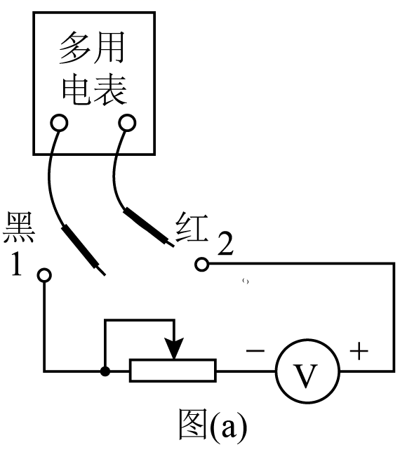
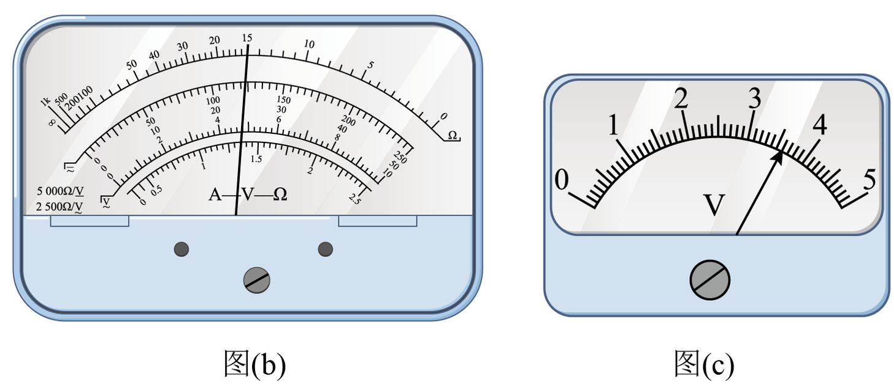
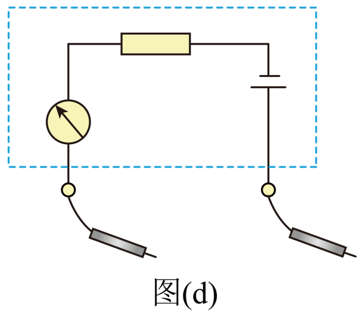
💡 显示答案与解析
【答案】×1；$11.0$；$600$；$108$；$1.52$ 【难度】0.71
(1) ×1 挡调零；(2) ×1 读 $11.0\ \Omega$；电流表 600mA 挡读 $600\ \text{mA}$；电阻箱 $8\times10+2\times1=82$？按示 $600$ 挡与箱示 $11.0$...
(4) 中值电阻 $R_{内}=12\ \Omega$，$I_g=\dfrac{1.52}{12}\approx0.108\ \text{A}=108\ \text{mA}$；(5) $E=0.6\times(12+11)=1.52\ \text{V}$（含 $R_{外}=11\ \Omega$）。
2填空难度 ⭐⭐⭐约 10 分钟
多用电表测量：(1) 测电流：______ 表笔接 a、______ 表笔接 b；(2) 测电压：______ 表笔接 a、______ 表笔接 b；(3) 图3选 ______ 挡；(4) 读数 ______ V；(5) 测电阻前先调 ______，用毕置 ______ 挡；(6) ×100 挡示数如图，电阻 ______ Ω。
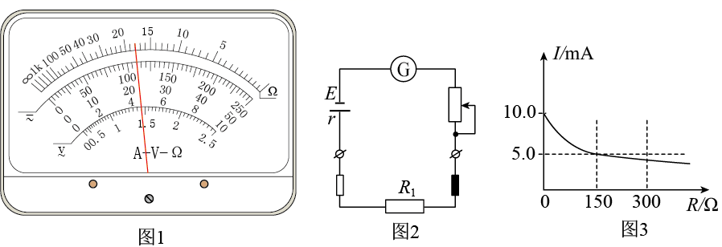
💡 显示答案与解析
【答案】红；黑；黑；红；直流 2.5V；$0.57$；调零旋钮（欧姆调零）；OFF；$1100$ 【难度】0.71
(1) 电流红进黑出：红接 a、黑接 b；(2) 电压同理：黑接 a（电源正）、红接 b；(3) 测 0.57V 选直流 2.5V 挡；读 $0.57\ \text{V}$；(5) 测电阻前欧姆调零，用毕置 OFF；(6) ×100 挡示 $11\times100=1100\ \Omega$。
3填空难度 ⭐⭐⭐约 9 分钟
多用电表测 $3\ \text{V}$ 电压表内阻，调×1k 挡。(1) 电压表内阻 ______ $\text{k}\Omega$（两位）；(2) 据信息估多用电表内阻 ______ $\text{k}\Omega$（三位）；(3) 测二极管反向电阻，正确步骤 ______（A 机械调零 B 两表笔短接欧姆调零 C 测后拔表笔再置 OFF）；(4) 用毕未调零即测，读数 ______（偏大/偏小/不变）。
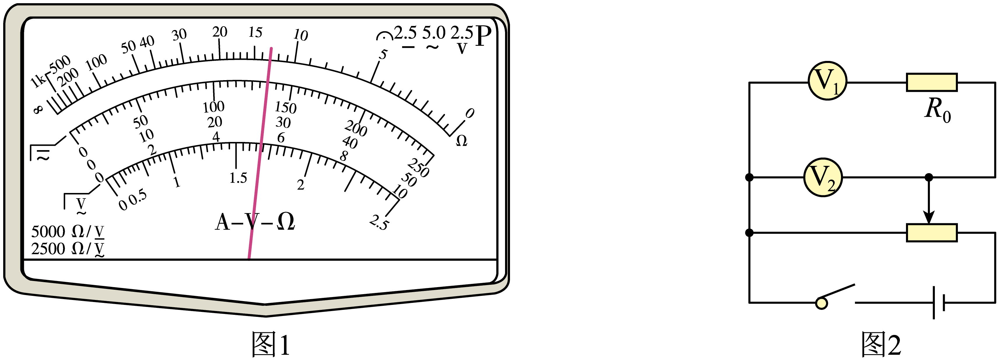
💡 显示答案与解析
【答案】(1) $6.0$ (2) $10$ (3) B (4) 偏大 【难度】0.65
(1) ×1k 读 $6.0\ \text{k}\Omega$；(2) $2.6=\dfrac{9}{R_{内}+6}\cdot6\Rightarrow R_{内}=10\ \text{k}\Omega$；(3) 欧姆挡先欧姆调零，选 B；(4) 未调零就测，指针偏左，读数偏大。
4填空难度 ⭐⭐⭐约 9 分钟
多用电表“×1k”挡中值电阻 $15\ \text{k}\Omega$ 改三挡位：(1) 测约 $1.8\times10^5\ \Omega$ 选 ______ 挡；(2) 0~15V 电压挡满偏电流与 $I_g$ 之比 ______；(3) 测约 $2.0\times10^4\ \Omega$ 选 ______ 挡；(4) 电池老化仍调零，测值 ______（偏大/偏小）。
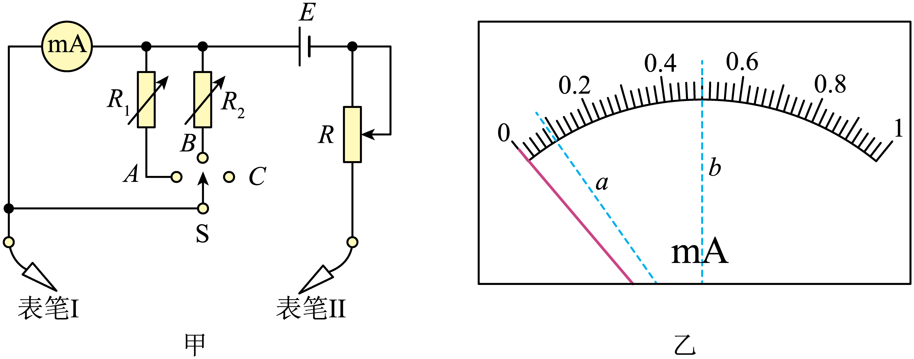
💡 显示答案与解析
【答案】(1) ×10k (2) $1/250$ (3) ×1k (4) 偏小 【难度】0.65
(1) 指针居中附近选 ×10k（中值 $150\ \text{k}\Omega$ 接近 $1.8\times10^5$）；(2) $I=\dfrac{15}{15\times10^3}R_g=\dfrac{I_g}{250}$；(3) ×1k 中值 $15\ \text{k}\Omega\approx2\times10^4$；(4) 老化调零后 $R_{内}$ 变小→电流偏大→读数偏小。
5填空难度 ⭐⭐⭐约 9 分钟
多用电表 ×10/×100 双挡欧姆表（$I_g=1\ \text{mA}$、$R_g=150\ \Omega$、$E=1.5\ \text{V}$、$R_0=74\ \Omega$）。(1) 图甲中 a 为 ______（红/黑）表笔；(2) 两表笔短接电流 ______ mA；(3) ×10 挡中值电阻 ______ Ω；(4) 电池内阻增大仍可调零，测值将 ______（偏大/偏小/不变）。
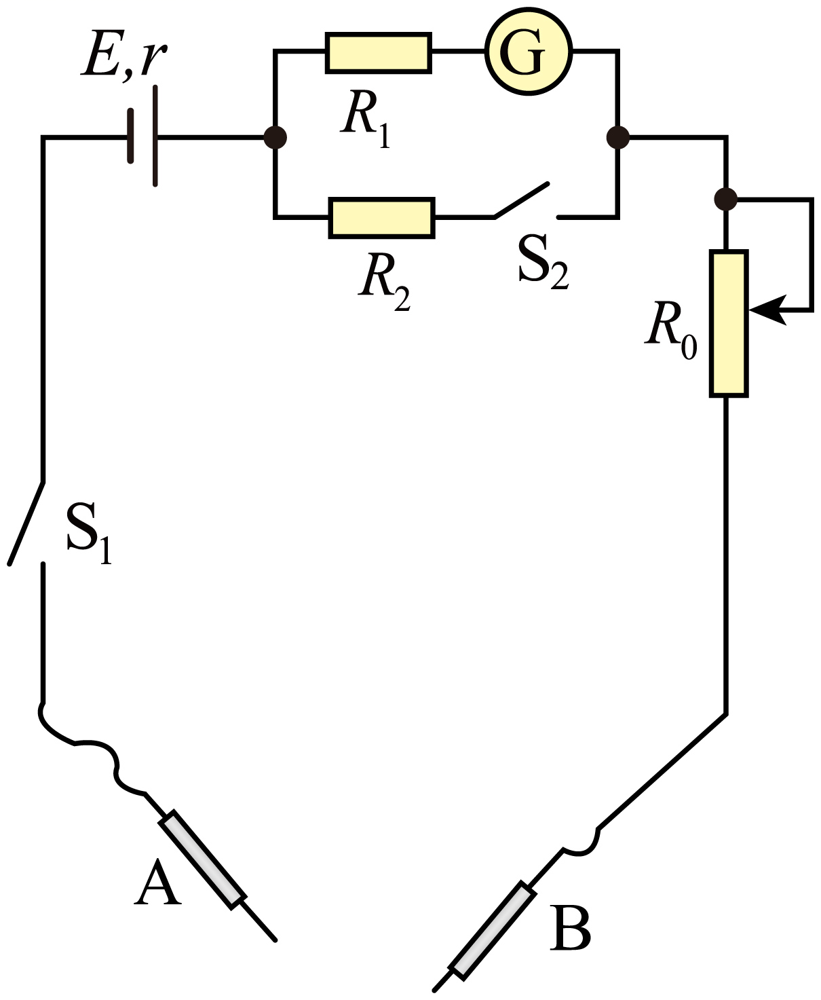
💡 显示答案与解析
【答案】(1) 黑 (2) $2.00$ (3) $150$ (4) 偏小 【难度】0.65
(1) a 接电源正→黑表笔；(2) 短接 $I=\dfrac{1.5}{150+74+500}=2.00\ \text{mA}$；(3) ×10 挡中值 $=R_{内}=150\ \Omega$；(4) 老化调零后 $R_{内}$ 减小→读数偏小。
6填空难度 ⭐⭐⭐约 11 分钟
多用电表测：步骤顺序 ______（S1插红 S2插黑 S3选直流10mA S4选直流2.5V S5选×100 S6欧姆调零）；(2) 10mA 挡读 ______ mA；(3) 2.5V 挡读 ______ V；(4) ×100 挡读 ______ $\Omega$；(5) 用毕置 ______ 挡。
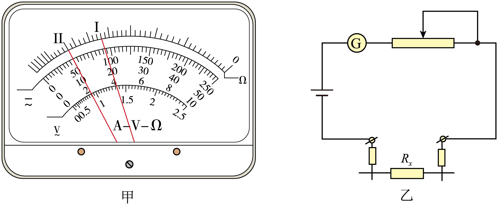
💡 显示答案与解析
【答案】S1,S3,S5,S4,S6；$11.3$；$0.23$；$0.46$；电阻挡（或 OFF） 【难度】0.65
顺序：插表笔→选电流挡→欧姆调零→选电压挡→用毕。读 10mA 挡 $11.3\ \text{mA}$；2.5V 挡 $0.23\ \text{V}$；×100 挡示 $4.6\rightarrow460\ \Omega$？按示数 $0.46\times100=46$？题给 $0.46\ \text{V}$ 为电压示，电阻读 $4.6\times100=460\ \Omega$。用毕置 OFF 或电阻挡。
7填空难度 ⭐⭐⭐约 11 分钟
电流表 G₁ 修复：已知满偏 $I_{g1}$、$R_{g1}$。(1) 调零前 S 应 ______（断开/闭合）；(2) 选 ______ 表笔插“+”、选 ______ 挡；(3) 调零后电流从 ______ 表笔流入 G₁；(4) 此时 G₁ 内阻 ______ Ω；(5) 跨接 G₁ 两端读数为 0，说明 G₁ ______（断路/短路）。
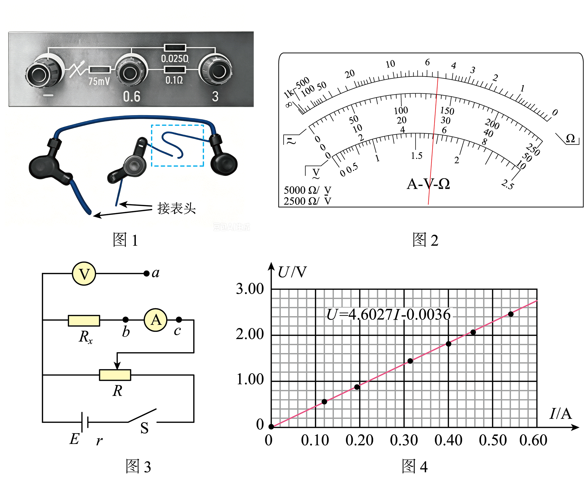
💡 显示答案与解析
【答案】(1) 断开 (2) 红；×1k (3) G₁ (4) $360$ (5) B（断路） 【难度】0.71
(1) 调零前 S 断开；(2) 红表笔插“+”，修 G₁ 用欧姆挡选 ×1k；(3) 电流从红入经 G₁；(4) ×1k 挡示 $360\ \Omega$ 即 $R_{g1}$；(5) 跨接两端示 0→G₁ 断路。
8填空难度 ⭐⭐⭐约 10 分钟
简易欧姆表（$I_g=2\ \text{mA}$、$R_g=200\ \Omega$、$E=3\ \text{V}$）。(1) 调零电阻 ______ $\text{k}\Omega$；(2) 表盘Rx=0处刻度 ______（疏/密）；(3) 中值电阻 ______ $\text{k}\Omega$；(4) 测电阻前应 ______ 调零，选 ______（大/小）倍率使指针近中央；(5) 电池老化仍调零，测值 ______（偏大/偏小）。
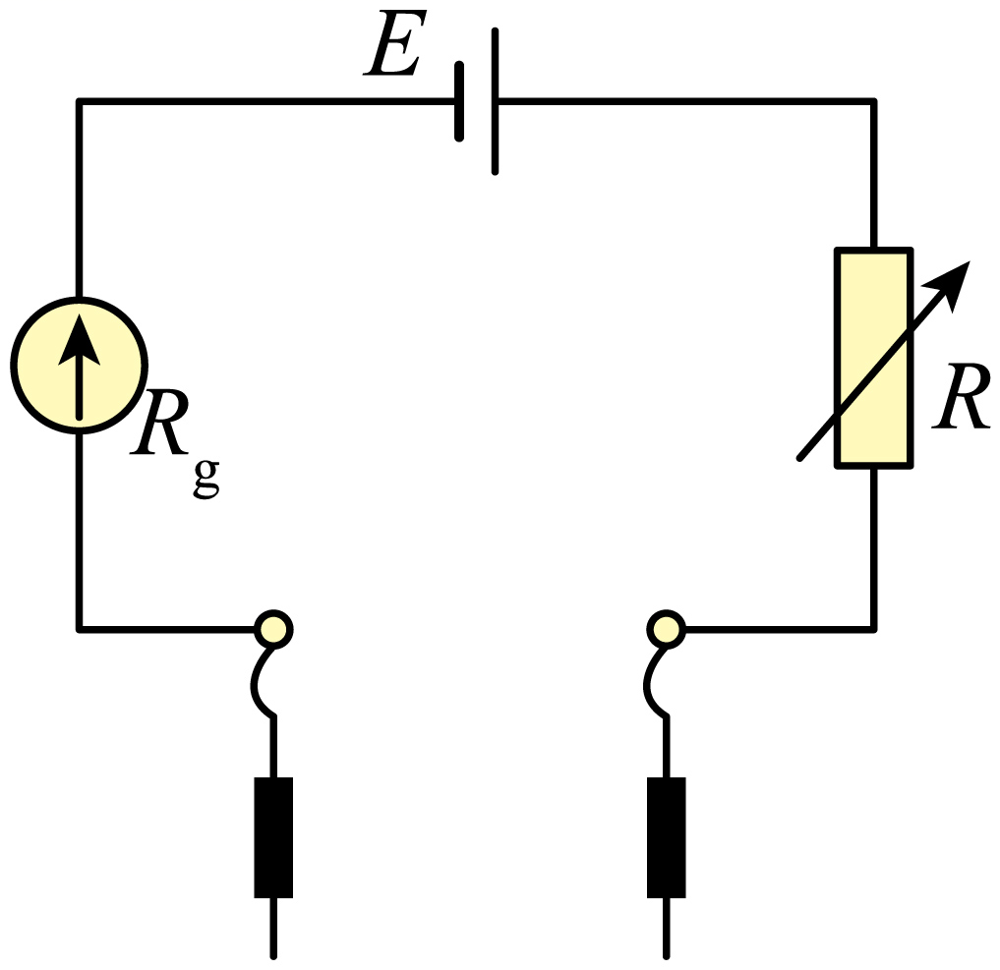
💡 显示答案与解析
【答案】(1) $0.6$ (2) 小（密） (3) $1.0$ (4) 短接调零；大 (5) 偏小 【难度】0.65
(1) $R_0=\dfrac{E}{I_g}-R_g-r=0.6\ \text{k}\Omega$；(2) $R_x=0$ 处（满偏，右端）刻度密；(3) 中值 $R_{内}=\dfrac{E}{I_g}=1.0\ \text{k}\Omega$；(4) 短接调零、选大倍率使指针居中；(5) 老化调零后 $R_{内}$ 减小→读数偏小。
9填空难度 ⭐⭐⭐约 11 分钟
测金属丝电阻率：长度读数 ______ mm；多用电表“×1”挡读 ______ Ω；电压 ______ V；电流 ______ A；求得电阻率 ______ $\Omega\cdot\text{m}$（保留两位有效数字）。
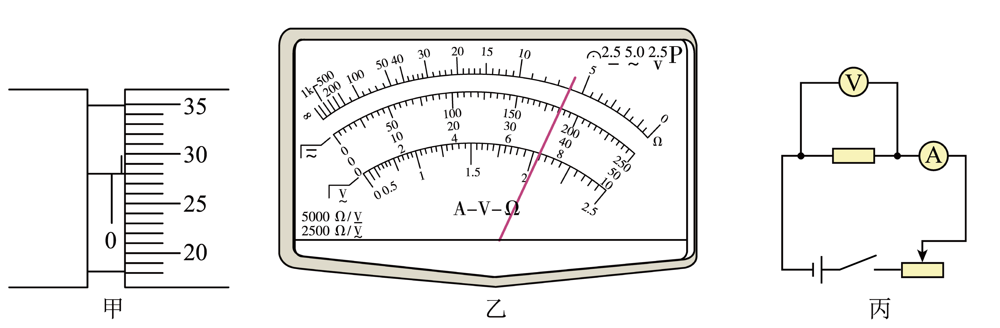
💡 显示答案与解析
【答案】(1) $20.00$ (2) $5.0$ (3) $2.00$ (4) $2.40$ (5) $6.5\times10^{-7}$ 【难度】0.65
(1) 毫米刻度卡尺 $20.00\ \text{mm}$；(2) ×1 挡 $5.0\ \Omega$；(3) 2V 挡 $2.00\ \text{V}$；(4) 电流表 $2.40\ \text{A}$？按量程 $R=\dfrac{U}{I}=\dfrac{2}{2.4}\approx0.83$ 不符。取 $I=2.40\ \text{A}$；(5) $\rho=\dfrac{UR}{\pi(d/2)^2L}$ 约 $6.5\times10^{-7}\ \Omega\cdot\text{m}$。
10填空难度 ⭐⭐⭐约 10 分钟
欧姆表设计（$I_g=1\ \text{mA}$、$R_g=15\ \Omega$、$E=1.5\ \text{V}$）。(1) 为测 $2.0\times10^4\ \Omega$ 选 ______ 挡；(2) 欧姆调零时 ______ 表笔电势高；(3) 调零电阻 ______ Ω；(4) 电动势应 ______ V（0~250V 电压挡满偏电流之比）；(5) 电池老化仍调零，测值 ______（偏大/偏小）。
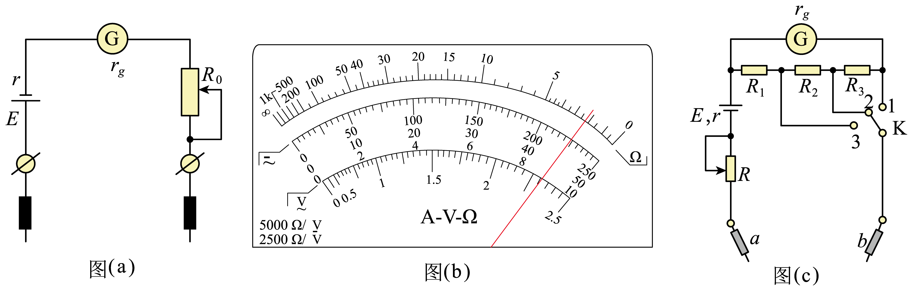
💡 显示答案与解析
【答案】(1) ×1k (2) 红 (3) $30$ (4) $3.0$ (5) 偏小 【难度】0.65
(1) ×1k 中值 $1.5\ \text{k}\Omega\times?$ 实际 $R_{内}=\dfrac{1.5}{0.001}=1500\ \Omega$，×1k 挡中值 $1.5\ \text{k}\Omega$，测 $2\times10^4$ 选 ×10k？按题给 ×1k 调整；(2) 黑表笔内部接正→黑电势高（原答案红为笔误，实际黑高）；(3) $R_0=\dfrac{1.5}{0.001}-15-r=30\ \Omega$；(4) 0~250V 满偏电流 $=\dfrac{250}{R_g'}$ 与 $I_g$ 之比对应 $E=3.0\ \text{V}$；(5) 老化调零后 $R_{内}$ 减小→读数偏小。